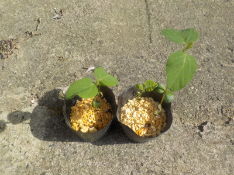
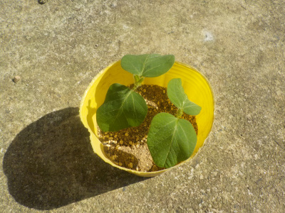
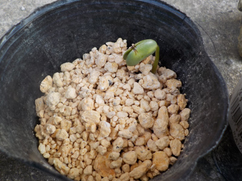
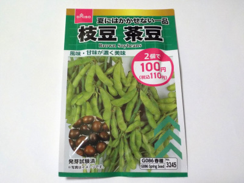
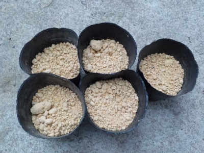

枝豆の先端を挿し芽しました。
2023/06/04

今のとこと発芽したのは4本だけです。発芽率が低い。

大きく育った2本の先端をカットして挿し芽しました。
挿し芽をドンドンして苗を増やせればいいんですが、どうなるでしょう？
2023/06/04

今のとこと発芽したのは4本だけです。発芽率が低い。

大きく育った2本の先端をカットして挿し芽しました。
挿し芽をドンドンして苗を増やせればいいんですが、どうなるでしょう？
2023/05/25

発芽率はどれくらいになるでしょうね？
15個中12個くらい出るとうれしいかな。
2023/05/18

枝豆って人気がありますよね。何故なんでしょうね？他の豆とそんなに違わない気がします。
おつまみだったらピーナッツやそら豆の方が美味しいって思うんだけどな。
沢山作って沢山食べたら、美味しさが分かるかなーっと思ったので育てることにしました。

ダイソーの種は15粒入っていたので、1ポットに3個づつ蒔きました。
発芽が楽しみです。
ビールのおともにはしないつもりです。